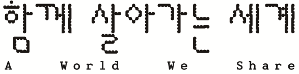
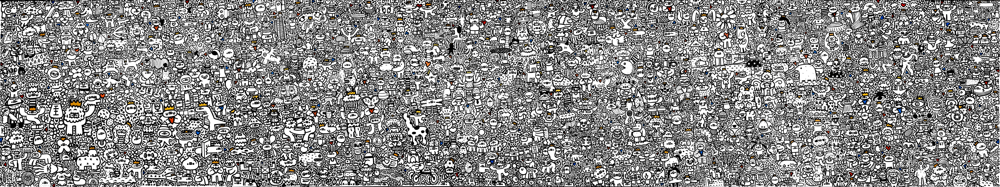

수많은 상상, 하나의 벽화Many imaginations. One shared world.

요요진 Yoyojin
요요진의 〈함께 살아가는 세계〉는 작가의 캐릭터 ‘요요’와 어린이, 시민들이 상상한 생명체가 함께 살아가는 모습을 그린 벽화입니다.
Yoyojin’s A World We Share is a mural depicting the artist’s character “YoYo” living alongside creatures imagined by children and other participants.
작품 이야기Discover the story
상상이 모여,
하나의 세계로Imagining
a world together
전시가 시작되기에 앞서 8월 13일(목)부터 8월 30일(일)까지 18일 동안 사전 참여 프로그램 〈아직 만나지 못한 친구를 상상해 봐요!〉를 진행했습니다.
어린이와 시민들이 상상한 생명체를 자유롭게 그리고 이야기를 적어 약 1,200장의 그림이 모였고, 이 가운데 498개의 생명체가 요요진의 방식으로 다시 그려져 벽화 속에 담겼습니다.
전시장 입구의 영상에서는 ‘요요’와 참여자들이 상상한 다양한 생명체가 하나둘 더해지며 〈함께 살아가는 세계〉가 완성되어 가는 과정을 볼 수 있습니다.
Ahead of the exhibition, the participatory program Imagine a Friend You Haven’t Met Yet! was held for 18 days, from August 13 to 30. Children and other participants were invited to draw creatures from their imagination and write stories about them, resulting in around 1,200 drawings. Of these, 498 creatures were selected and redrawn in Yoyojin’s style before becoming part of the mural.
The video at the entrance to the gallery shows how A World We Share took shape, as YoYo and the many creatures imagined by participants gradually came together in the mural.
벽화 속 친구의
처음을 만나 보세요Meet the imagination
behind the mural
AR로 벽화를 비추면, 참여자가 그린 원화와 그 안에 담긴 이야기를 만날 수 있습니다.
Use your camera to discover the participants’ original drawings and the stories behind the creatures in the mural.
- 벽화를 비춰 주세요Point at the mural
캐릭터와 주변 그림이 함께 보이도록 담아 주세요.
Include a creature and the drawing around it.
- 노란 번호를 눌러 주세요Tap a yellow number
원화와 요요진의 벽화를 함께 볼 수 있습니다.
See the original drawing alongside Yoyojin’s mural.
- 그림에 담긴 이야기를 읽어 보세요Discover its story
이야기를 닫고 또 다른 친구를 찾아보세요.
Close the story to meet another creature.
벽화를 비추고, 원화와 이야기를 만나세요.Point at the mural. Discover the stories.
카메라 허용이 필요합니다. 영상은 저장·전송하지 않습니다.Camera permission is needed. Video is never saved or sent.
WALL & STORIES
벽화 속 친구들
벽화를 좌우로 움직이며 노란 표시를 눌러 보세요.
LITTLE IMAGINATIONS